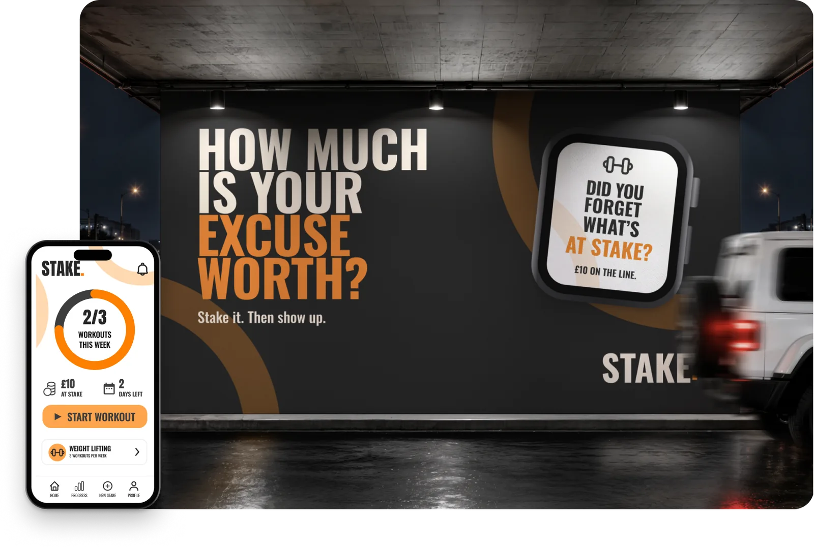
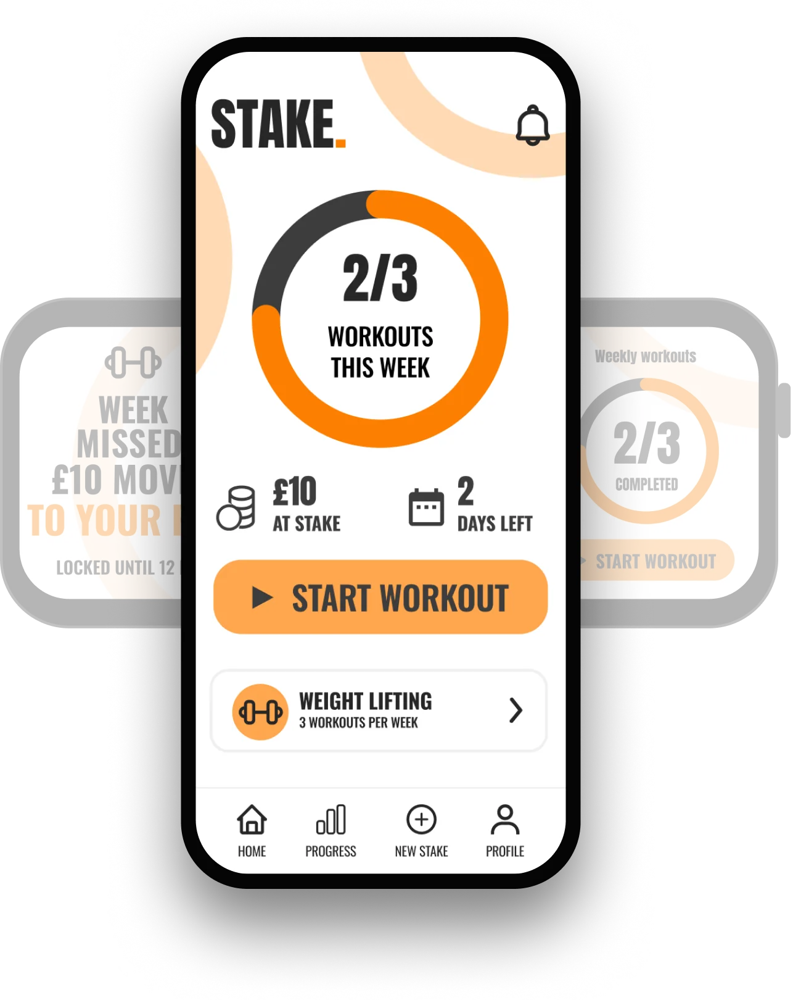
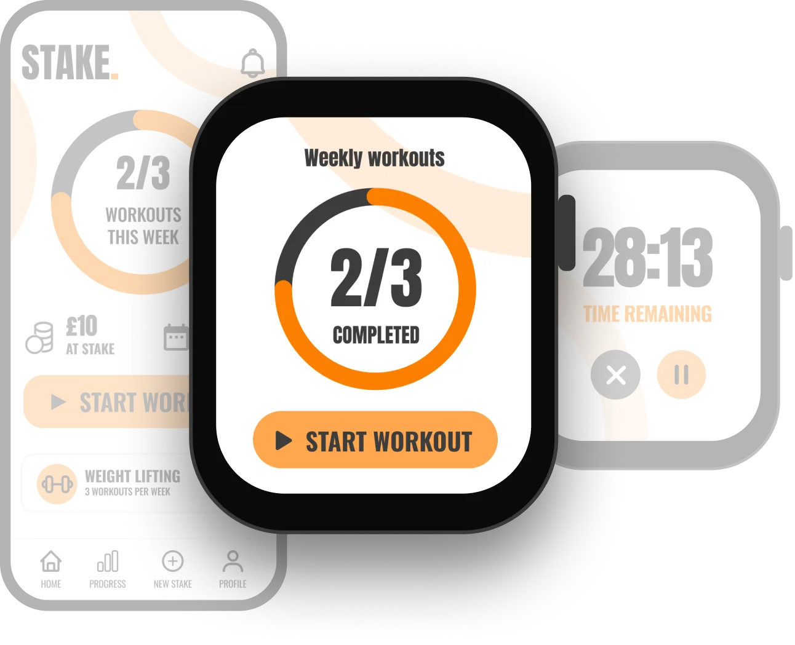
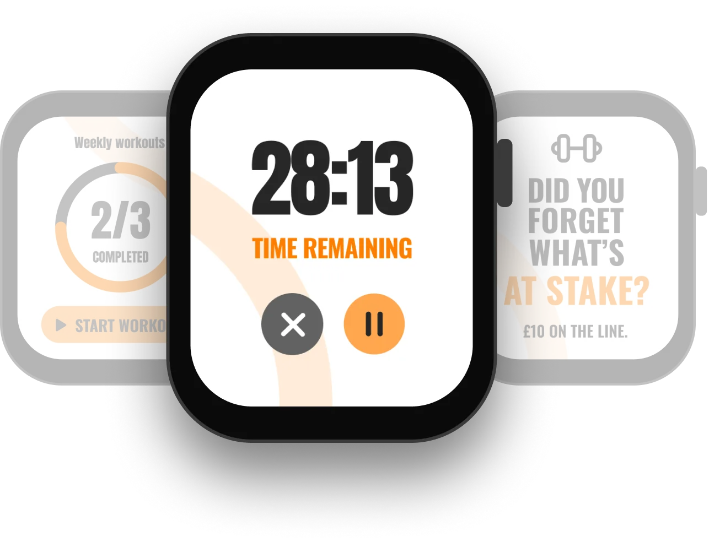
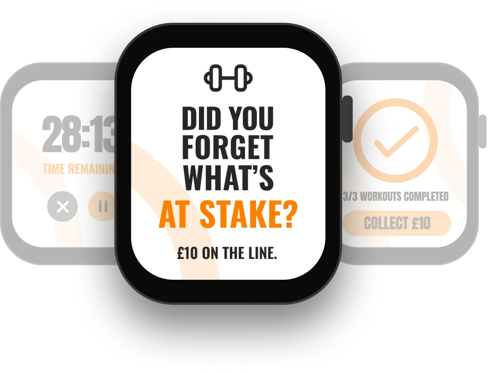
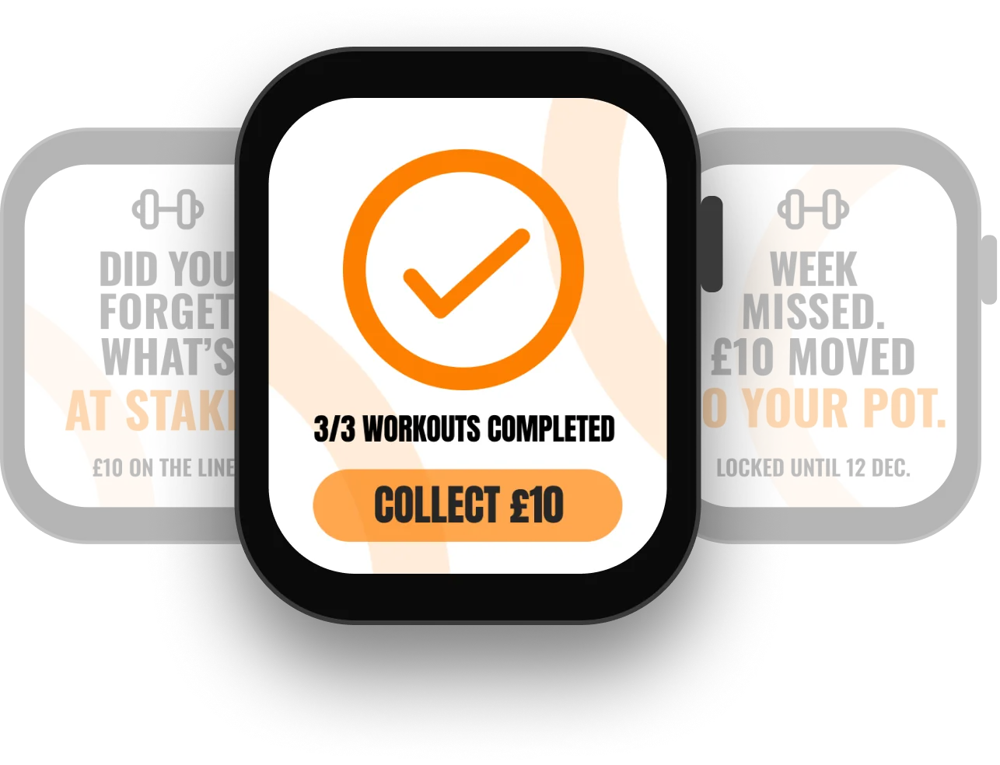
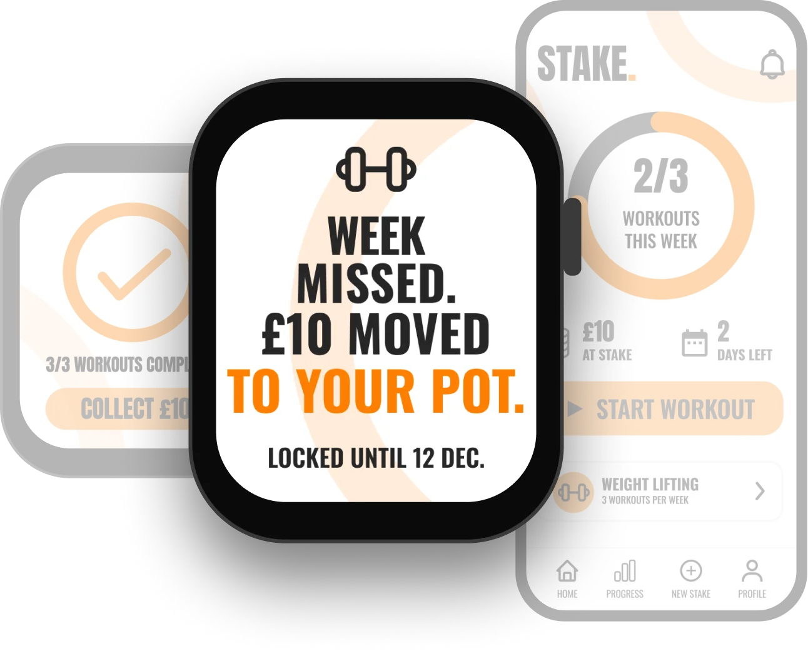

Put money on your workouts. Hit your goal and you keep it.
A smartwatch app built on loss aversion: people feel a loss about twice as strongly as an equal gain.

Every fitness app I’ve downloaded has eventually offloaded itself from my phone. Giving up on a goal costs you nothing, so it’s easy. I researched what actually makes people stay committed to a goal and I came across the concept of loss aversion.
use the fear of losing something to help people stick to their fitness goals?
Below are three times when feedback helped me to develop and improve my app.
Nike Run Club showed me that mid-workout, people only want to know how long is left. So I went back and stripped my wireframes right down.
My first watch home screen gave progress, money, deadline and the button the same weight, so nothing was the main focus. I set an order and cut the rest.
Lowercase felt too friendly and easy to ignore. I took inspiration from the motivational quotes on the walls in BetterGym, which are capitalised.





